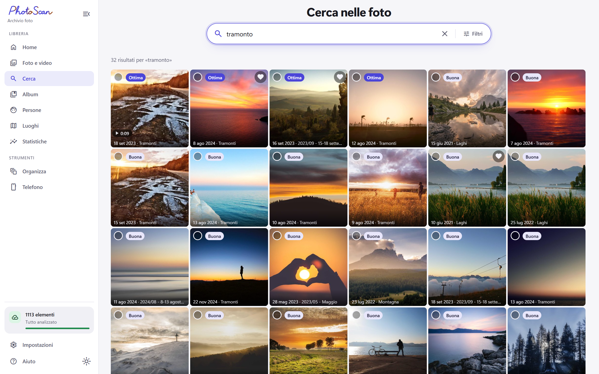
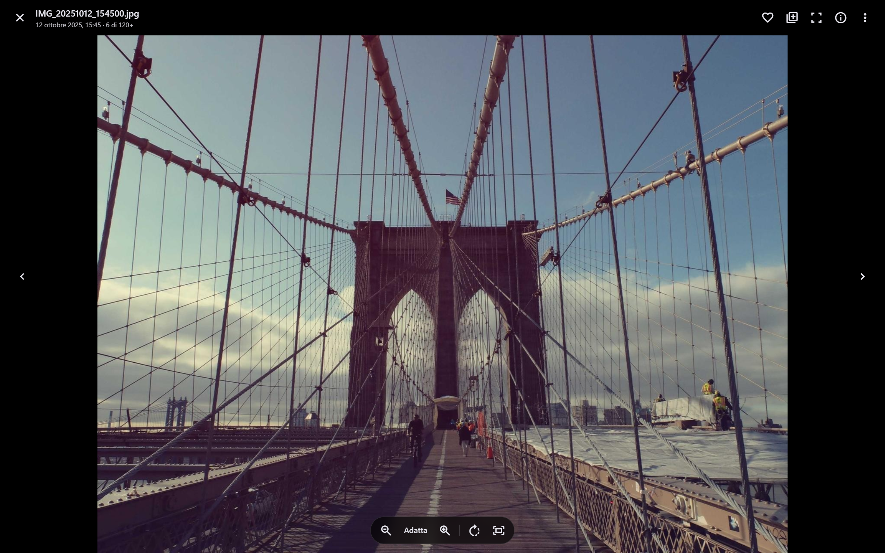

Ordine automatico
Propone cartelle per periodo ed evento, come 2024/03 - Vacanza al mare. Rivedi il piano in simulazione e decidi tu cosa applicare.
PhotoScan analizza il tuo archivio di foto e video sul PC con l'intelligenza artificiale, trova duplicati e scatti simili, ti fa cercare a parole e propone una struttura pulita per anno, mese ed evento.

Migliaia di foto e video sparsi tra backup del telefono, vecchi dischi e cartelle con nomi poco utili: finalmente sotto controllo.
Propone cartelle per periodo ed evento, come 2024/03 - Vacanza al mare. Rivedi il piano in simulazione e decidi tu cosa applicare.
Scrivi «tramonto», «torta» o «cane sulla neve» e trovi subito le foto giuste, anche senza tag o nomi file significativi.
Rileva copie identiche e foto quasi uguali. Scegli in blocco cosa tenere o spostare nel Cestino: niente viene cancellato al posto tuo.
Legge i dati GPS delle foto per mostrarle su una mappa interattiva e riscoprire viaggi e momenti dimenticati.
Raggruppa i volti ricorrenti e ti permette di dare loro un nome. Il riconoscimento volti è disattivato di default e parte solo se lo vuoi.
Si apre in una finestra dedicata dall'icona sul Desktop, con tema chiaro o scuro e interfaccia adattiva anche per schermi piccoli.
Clicca su qualsiasi schermata per ingrandirla a tutto schermo. Realizzate su una libreria demo con foto Unsplash.





Puoi fermarti e riprendere in qualsiasi momento: i file già elaborati non vengono mai rifatti.
La regola di base di PhotoScan è semplice: nessuna modifica silenziosa, nessun cloud e nessuna cancellazione automatica.
_Duplicati; eventuali eliminazioni scelte da te vanno sempre nel Cestino di Windows.
Servono Python 3.13 e, consigliata, una scheda grafica NVIDIA. Senza NVIDIA funziona comunque su CPU.
git clone https://github.com/RedErik21/PhotoScan.git
cd PhotoScan
python -m venv .venv
.\.venv\Scripts\activate
pip install torch torchvision --index-url https://download.pytorch.org/whl/cu126 # GPU NVIDIA (oppure: pip install torch torchvision)
pip install -r requirements.txt
winget install Gyan.FFmpeg # facoltativo, per i video
Al primo utilizzo viene scaricato il modello di riconoscimento (~400 MB, una sola volta).
Avvia PhotoScan con .\.venv\Scripts\pythonw.exe -m fotoscan.desktop oppure dall'icona sul Desktop.
No. Analisi, ricerca e organizzazione avvengono interamente sul tuo computer. L'unica connessione è il controllo delle nuove versioni su GitHub, che puoi disattivare dalle Impostazioni.
No. La cartella originale è in sola lettura e i duplicati vengono separati, non eliminati automaticamente. Se decidi di liberare spazio, i file selezionati vengono spostati nel Cestino di Windows con conferma esplicita.
Oltre al programma e al modello di riconoscimento, il catalogo e la cache delle miniature crescono con il numero di file. PhotoScan è progettato per archivi di circa 200 GB e 14.000+ file.
Sì. Chiudendo l'app l'analisi si ferma in sicurezza e alla riapertura riprende esattamente dai file non ancora elaborati.
Foto JPEG, PNG, WebP, TIFF, HEIC (con supporto incluso) e video (MP4, MOV, MKV, ecc. tramite FFmpeg). HEIC e TIFF vengono mostrati in anteprima JPEG generata in locale.
Le nuove versioni sono pubblicate nelle Release di GitHub e visibili in Impostazioni > Aggiornamenti. L'aggiornamento si installa alla riapertura con copia di riserva automatica.
No. È disattivato di default e si attiva solo se lo desideri dalle Impostazioni.